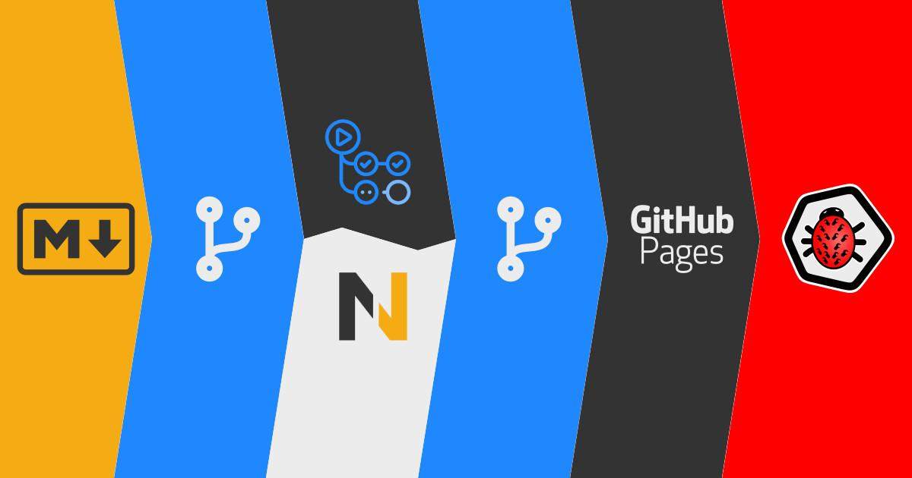

Jako tester, szczególnie automatyzujący, bardzo często spotkamy się z zagadnieniami związanymi z tzw. continuous delivery oraz continuous integration, czyli w skrócie CI/CD. Jednym z najbardziej popularnych narzędzi, wspomagających ten proces, jest niewątpliwie Jenkins. Ma on jednak pewną wadę, tzn. trzeba go albo zainstalować na własnym serwerze, albo zapłacić zewnętrznej firmie, która udostępni nam Jenkinsa jako usługę typu SaaS (Software as a Service). W większości firm obsługą narzędzi CI/CD zajmuje się zespół DevOps, jednak w małych firmach lub w przypadku projektów robionych po godzinach w ramach nauki, fajnie byłoby móc zautomatyzować sobie część zadań i nie koniecznie ponosić za to dużych opłat. Jedną z takich opcji jest GitHub Actions.
W poniższym wpisie zajmę się pokazaniem jak ja wykorzystuje to narzędzie przy tworzeniu tego bloga oraz omówię możliwości wykorzystania go w testach automatycznych. Zapraszam więc do dalszej lektury.
Czytaj więcej…